5. Generic Script Functions
The Script System comes with a set of generic, or core, functions that control the program flow. These functions are always available irrespective of the activated plug-ins. You will find these functions in the categories Core Functions , Function Sequences, and Time Functions (figure below).

5.1. Core Functions
5.1.1. Core Functions Overview
The category Core Functions contains functions that control program flow and the use of variables.
5.1.2. Interrupt Script

With this function you can interrupt the script execution. The function has the same effect as pressing the Interrupt button in the toolbar. The user can continue the script by pressing the Run button in the toolbar.
Important
If script execution is interrupted, all sequences running in parallel are interrupted and no communication with the script is possible.
5.1.3. Interrupt Sequence

With this function you can interrupt the execution of the function sequence in which the function is contained. If several sequences are executed in parallel using the Parallelen Sequence, only the sequence containing the function is interrupted.
If the interrupt sequence function is executed, you will receive information in the Event Log of the application that the sequence was interrupted:
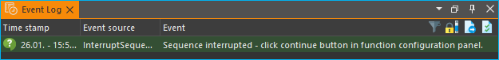You can double-click on the log entry to display the function and its operating panel in the Script Editor. You can then continue the execution by clicking on Continue in the control panel of the Interrupt Sequence function.

5.1.4. Show Message

The Show Message function allows you to display a message to the user and optionally interrupt script execution. It is well suited for applications that require an intervention by the user at certain times during the execution of a script.
When you run this script function, the message can be displayed both in a message window…

… and in the Event Log view of the application:

In the Event Log, all messages are listed in chronological order. The optional Message Box always displays the last message.
Show Message Function Configuration
When configuring the message function, you can configure the following options:
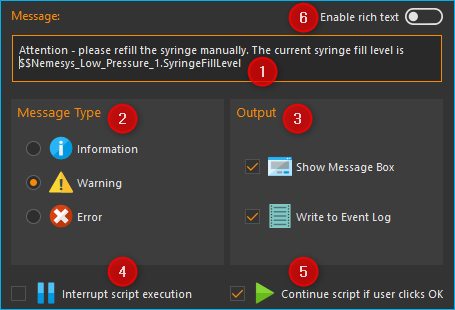Enter your message text into the Message field.
Select the type of message you want to display in the Message Type group. Depending on the message type, the relevant icon appears in the event log and in the message window and the message is highlighted with a type-specific color in the event log.
In the Output pane you can set whether the message should be displayed in a separate message window (Show Message Box) and whether the message should appear in the Event Log (Write to Event Log).
Select whether the message should interrupt script execution. If there is a check mark in this field, the complete script execution is interrupted until the user continues the program execution. If you display a message window with a Show Message Box, you should not select this option and use option ❺ instead.
Here you can select whether the script execution will be continued after clicking OK in the message box window.
Rich-Text - Turn on this option to format your text with bold, italics, colors, and more.
Depending on the options selected, this function works like this:
Show Message Box |
Write to Event Log |
Inter-rupt Script Exe-cution |
Continue Script if User Clicks OK |
Result |
A message is written to the event log and then the next function is executed. |
||||
A message is written to the event log and script execution is interrupted. The execution can be continued by clicking the Run Script button in the script toolbar. |
||||
A message is written to the event log, a message box is displayed and then the next function is executed. |
||||
A message box is displayed. When the user clicks OK, the next script function is executed. |
||||
A message window is displayed and script execution is interrupted. Execution can be continued by clicking the Run Script button in the script toolbar. |
Displaying variables content or process data
In the Message field of the function, you can also use variables
(like $Volume) or Device property Identifiers
(like $$neMESYS1.SyringeFillLevel).
These serve as place holders and are replaced at script runtime by the
contents of the variables or the process data of a certain device. As
soon as you enter a dollar sign $ in the message input field, a list
of available variables is displayed, from which you can select a
variable (see figure below).

E.g. you can enter the following text in the message input field:
The contents of variable A is $A.
If the variable $A contains the value 25.3 at runtime, then the
function will display the following message:
The contents of variable A is 25.3.
Tip
You can display the contents of variables using the Show Message function, e.g. to check the results of calculations.
Tip
Click with the right mouse button in the input field and then select the context menu item Insert device property to insert a process data identifier of device process data you would like to print out, when Show Message function is executed.
Rich Text Support
If you activate the Enable rich text option, you get extensive possibilities to format your message text, to design lists or to insert pictures and hyperlinks. If the option is activated, a toolbar similar to that in a word processing application will be displayed:

Important
Rich text needs more file space when script files are saved and may increase load times of script files so switch it on only in case you really need it.
5.1.5. Create Variable

With Create Variable you can define a new variable and assign a name, a type hint, and a value to that variable (see figure below):
Name – set a unique name for your variable. For details concerning the naming of variables, please refer to section Naming Variables.
Type Hint – choose the kind of variable you want to set.
Value – give the variable a value or, if the variable is of the type JavaScript Expression, enter the JavaScript code to calculate the variable.
Tip
To prevent an incorrect variable name, the
Name field accepts only names that start with a
$ symbol.
Types of Variables
The variables in the script system are not typed and can hold a wide variety of values. For example, a numeric value can be assigned to a variable when it is created and a text can be stored in the same variable later. The Type Hint field in the configuration area is simply a hint as to which type is to be stored and is used to display a corresponding input field depending on the type. All types, Boolean, Number or Text can also be entered via a JavaScript expression. The following table is an overview of a selection of data that can be stored into variables:
Type Hint |
Data / Values |
Examples |
|
|---|---|---|---|
Boolean |
Boolean values |
true, false |
|
|
Number |
Numeric values |
24, 10, -13.23, -128, 0.001 |
Text |
Strings, words or text |
Value1, Enter a value |
|
|
JavaScript |
Device References (e.g. for passing devices to functions) |
$$Nemesys_M_1 or $$Nemesys _M_1_ForceSensor |
|
JavaScript |
Array of numbers |
[3, 7, 8.5, 12, 23.5] |
|
JavaScript |
Array of strings |
[User1, User2, User3, User4] |
|
JavaScript |
Array of device references |
[$$Nemesys_M_1, $$Nemesys_M_2] |
|
JavaScript |
Calculation result |
25 + $TargetPositionX |
|
JavaScript |
Read device properties / process data |
$$Nemesy s_M_1.DosedVolume |
{kind=link}
{kind=link}
Calculating using Variables
If you set the variable type to JavaScript Expression, you can define an expression in the field Value that is to be calculated during run time. This expression may include other variables to use their respective values. Script variables can be accessed via the variable name, which starts with a dollar $ sign.
Tip
The auto-complete feature will support you during entering a new expression by listing all previously defined variables.
You can also directly read the properties / process data of a device
within a JavasScript expression and include it in a calculation. In the
following example, the variable $Flow ❶ is calculated as a twentieth
of the device property $$Nemesys_M_1.MaxFlow ❷. Device properties
can be easily added using the context menu entry Insert device property ❸.

Tip
Click with the right mouse button in the input field and then select the context menu item Insert device property to directly access device process data values in the calculation.
Using the context menu you can also insert device references into the
JavaScript code. This makes it possible to store device references
(e.g. $$Nemesys_M_1) or arrays with device references
(e.g. [$$Nemesys_M_1, $$Nemesys_M_2, $$Nemesys_M_3])
in variables. In the following example, a reference of the $$QmixP1_Pressure1
pressure sensor is stored in the $PressureSensor variable.

The identifiers for device references start with two dollar signs like Device Properties, but consist only of the device name without any additional device property.
Operators
The following tables summarize available operators and their syntax:
Arithmetic Operators |
Example |
|
|---|---|---|
+ |
Addition |
|
- |
Subtraction |
|
* |
Multiplication |
|
/ |
Division |
|
% |
Division and returning the remainder |
|
Logical Operators |
Example |
|
|---|---|---|
== |
Checks for equivalence |
|
!= |
Checks for difference |
|
> |
Checks for Larger Than |
|
< |
Checks for Smaller Than |
|
≥ |
Checks for Larger or Equivalent |
|
≤ |
Checks for Smaller or Equivalent |
|
&& |
Links two values with the logical AND |
|
|| |
Links two values with the logical OR |
|
! |
Links a value with the logical NOT |
|
String Operators |
Example |
|
|---|---|---|
+ |
Assembles two strings or texts |
|
Operator Precedence
Operator precedence determines the order in which operators are evaluated. Operators with higher precedence are evaluated first.
Precedence |
Operators |
|---|---|
1 |
|| |
2 |
&& |
3 |
== != |
4 |
< ≤ > ≥ |
5 |
+ - |
6 |
\ / % |
7 |
! |
8 |
() |
Parentheses allow you to influence the precedence in which the various operators are executed according to your needs. Refer to the JavaScript specification for more details about operator precedence.
Examples
The following examples show how to use variables for calculations:
Example 1
Adding two variables a and b and storing the result as a third variable c:
Name: |
$c |
JavaScript: |
|
Example 2
Multiplication of the variable Speed with 5 and storing the result as the same variable:
Name: |
$Speed |
JavaScript: |
|
Example 3
Connecting the two Boolean variables SwitchedOn and CheckOk with the logical AND and save the result as the variable TurnOn:
Name: |
$TurnOn |
JavaScript: |
|
Example 4
You want to assign the current flow rate of the pump Nemesys_M_1 to the variable $Flow.
Name: |
$Flow |
JavaScript: |
|
Example 5
You want to create an array with 4 flow rates and assign it to the $TargetFlows variable.
Name: |
$TargetFlows |
JavaScript: |
|
Example 6
The $TargetFlows variable contains an array of 4 numeric values. You want to assign the third value in the array to the $NextFlow variable. The index for the array access is numbered starting from 0. I.e. to access the third element the index is 2.
Name: |
$NextFlow |
JavaScript: |
|
Example 7
You want to store an array with the two current values of the pressure sensors QmixP_1_Pressure1 and QmixP_1_Pressure2 in the variable $Pressures.
Name: |
$Pressures |
JavaScript: |
|
Example 8
You want to store a device reference of the Nemesys_M_1 pump in the variable $Process Pump to be able to pass it to a function later.
Name: |
$ProcessPump |
JavaScript: |
|
5.1.6. Set Variable

With Set Variable you can assign a new value to an already existing variable. The configuration of the variable is equivalent to the function Create Variable.
Tip
When entering a name, the auto-complete feature will provide you with a selection of all previously defined variable names.
Important
To be able to set the value of a variable using the Set Variable function, the variable has to be defined beforehand, e.g., by using the function Create Variable.
5.1.7. Variable Declaration Sequence

With the variable Declaration Sequence you can combine variables that you declare with Create Variable or Create Property Variable functions. This helps you to improve the clarity of your script. Instead of many individual variables, only the variable declaration sequence is visible and only when this sequence is expanded, the user sees the declared variables.
All variables are visible at the level in which the declaration sequence is located. This means that the variables within the sequence are declared as if they were at the level of the declaration sequence.

With the sequence you can also group variables that logically belong together, making it easier for the user to find specific variables.
5.1.8. User Input

This function allows the reading of a single input value (number or text) into an existing variable. In the configuration area of the User Input function (see figure below), you can configure the following parameters:
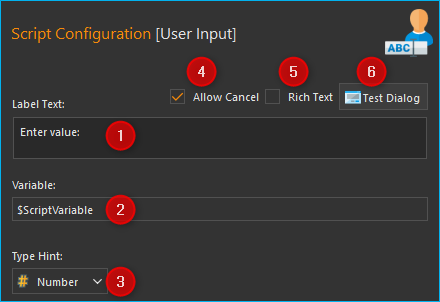Label Text - Here you specify a text that will be displayed to the user during the execution of the function above the input field as a label and explanatory text.
Variable - In this field you specify the variable to store the value entered by the user. In addition, the value of the variable is also used as the initial value when the input dialogue is displayed. This means if you initialise the variable with the value 5 beforehand, for example, the value 5 is displayed as the default value when the input dialogue is shown.
Type Hint - You can specify the input type, number or text, here. Depending on the selected input type the user input dialog accepts only certain values.
Enable Cancellation - If this checkbox is active, the displayed dialogue contains a Cancel button that allows you to cancel the input dialog.
Rich Text - Turn on this option to format your text with bold, italics, colors, and more.
Test Input Dialog - Clicking this button allows you to test the input dialog to check how the user will see the input dialog later during execution of the script function (see figure below).
Input Dialog
Input Dialog with Cancel Button
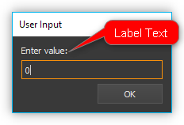
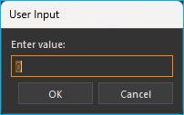
If the input is confirmed with OK during script execution, the variable contains the value entered by the user. If the dialogue is cancelled with Cancel, the variable contains an undefined value. In JavaScript, e.g. in a Conditional Sequence, you can then test whether the value is undefined as follows:
$InputVariable === undefined
The following example script tests whether the user has cancelled the input dialogue. In this case, a corresponding message is written in the event log:
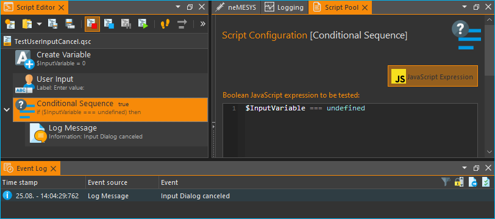Rich Text Support for Label Text
If you activate the Rich Text option, you get extensive possibilities to format your label text, to design lists or to insert pictures and hyperlinks. If the option is activated, a toolbar similar to that in a word processing application will be displayed:
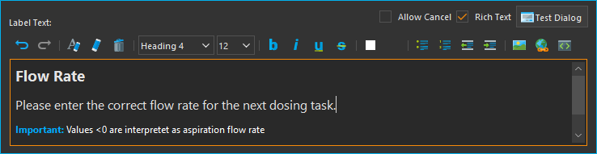Important
Rich text needs more file space when script files are saved and may increase load times of script files so switch it on only in case you really need it.
5.1.9. Script Function Call

Script Function Calls allow you to integrate your own scripts as functions. I.e. just as you create functions as reusable modules in other programming languages, you can also call your own functions in the script system in the form of external scripts.

External script functions can have 0 – 10 input parameters ❶ and 0 – 10 return values ❷. This allows you to pass values to the script (e.g. numeric values or variables) and read return values from the script and store them in script variables. Script File ❸ shows you the path to the external script file that is executed when the script is invoked.
In the section Programming your own script functions you will find detailed instructions on how to create your own script functions.
5.1.10. Execute JavaScript Code
This function allows you to execute JavaScript code in the script system of the application. When you insert the function into your script, you will see the initial JavaScript code in the configuration area.
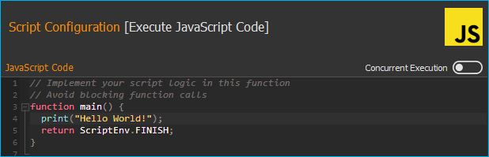When the script is executed, it is loaded by the JavaScript engine and then
the main() function is called. I.e. this function is the main
function of the script and the logic should be implemented there.
Tip
Read the section Using JavaScript for a detailed introduction into the use of JavaScript for Script programming and how to use this function.
5.2. Function Sequences
5.2.1. Introduction to Function Sequences

The Function Sequences category contains various types of function sequences. Function sequences are script functions that may contain a number of different functions. When Function Sequence is called, all script functions contained within this sequence are executed.
5.2.2. Counting Loop

The Counting Loop function allows for multiple sequential executions of the same function(s) within that loop. The number of times the loop is to be run is defined in the configuration area Loop Cycles.
In addition, you may set a name for the count variable Counter Variable of that loop. Within that loop, functions that support the use of variables may then use this variable to execute specific tasks or to perform additional calculations.
The number of loops may be defined explicitly, by setting a number, or implicitly, via a variable that returns a number (figure below, ❶).

Additionally, you can assign a custom name to the Counter Variable of the present loop function (figure above, ❷). Within this loop, other functions may access the current loop count via this variable and use it for further calculations. This may be used, e.g., to control incremental moves of positioning systems.
Important
The counting variable of a counting loop always starts with the value 0 (zero). This is, a loop count set to 10 contains the values 0 to 9 for the successive loops.
Important
You should always insert a Delay in a loop to prevent the loop from blocking the application interface by consuming 100% processor power. A small delay of 10 ms – 100 ms is sufficient.
You can use the count variable Counter Variable to end the loop prematurely (abort). If you set the value of the count variable to a value >= the number of Loop Cycles within the loop using the Set Variable function, the loop is terminated at the next loop run.
Tip
You can end the counting loop prematurely by changing the counting variable.
5.2.3. Conditional Loop
{kind=link}
This conditional loop function is used for multiple execution of functions within the loop as long as the loop condition set at its beginning is met. The termination condition in the loop header is checked before each iteration of the loop. The loop execution is stopped or skipped if the termination condition is false.
Spelled out, the Conditional Loop function reads as follows:
“Repeat the loop and execute the function(s) contained within that loop as long as the loop condition holds true.””
There are two ways to set the parameters for loop checking: a simple mode and as a JavaScript expression.
Configuration - Simple Mode
In the configuration panel, you may choose the simple mode to comfortably set the loop conditions directly via the Graphic User Interface – simply uncheck JavaScript Expression ❶. The following parameters may be set:

JavaScript Expression – this button is to toggle between the simple mode and JavaScript Expression mode (see section below).
Name – Enter the name of the variable whose value is to be compared or checked in the condition. The variable is on the left side of the comparison condition and must start with a dollar sign
$(such as$FlowRate).Type – allows you to give a type hint to the variable and thus toggle the controls in the Condition section.
Comparison operator – with the combo box you can conveniently select the comparison operator.
Comparison condition – the value or a variable that the variable from ❷ is to be compared with.
Sample Configuration: Simple Mode
The loop condition to be checked against is whether a the variable
$Position is smaller than or the same as 25000,31.
Variable Name ❷ |
Type ❸ |
Operator ❹ |
Condition ❺ |
|---|---|---|---|
$Position |
Number |
≤ |
25.000,31 |
The script editor shows the complete mathematical expression:

The resulting
expression effects that the loop will be rerun as long as the value of
the variable $Position is smaller than or the same as 25000,31.
Configuration - JavaScript Expression
Whereas the simple mode provides the user with a graphical interface, the JavaScript mode allows to directly insert an JavaScript expression with variable names and mathematical and logical expression.

In advanced mode, a JavaScript editor is displayed with syntax highlighting
and line numbers. Here you can set the loop condition using JavaScript
expressions. As shown in the example above, you can insert rather
complex mathematical expressions or multiple variables to set
conditions. JavaScript functions like Math.round() can also be used.
Important
You should always insert a Delay function in a loop to prevent the loop from blocking the application interface by consuming 100% processor power. A small delay of 10ms – 100ms is sufficient.
5.2.4. Function Sequence
{kind=link}
The Function Sequence is used to group functions. This makes navigation in the function tree easier, since the function sequence can be collapsed if necessary. Furthermore, the sequence also eases the copying of function sequences that consist of several functions. If, for example, you want to copy several functions that are executed one after the other, then simply move them into an empty function sequence. Then you can conveniently move or copy the entire sequence and thus reuse it in different places in the program.

Naming a Function Sequence
A function sequence may be given a name; that name will then be shown in the function tree. This simplifies navigation in particular with larger numbers of function sequences. To do this, simply enter the name by double-clicking the Caption Field (Figure above ❶).
Add function parameters and return values
You can access variables defined outside the function sequence from within the function sequence. Alternatively, you can also define function parameters and return values. Function parameters are values that are passed to the function when it is called. Return values are values (e.g. results of calculations) that are returned by the function to the calling script. Up to 10 function parameters and up to 10 return values can be defined for each function sequence. The functions in the sequence then only access the function parameters and not the external variables. This improves encapsulation and makes the function more independent of external variables and thus easier to maintain.
You can add function parameters ❷ or return values ❸ by clicking the Add buttons. Assign meaningful parameter names by clicking the parameter names above the input fields (figure below):

Loading a Function Sequence
The Function Sequence also allows the loading of pre-stored scripts: You may load a script, which you have created and saved previously, into your current function sequence. To do this, just click on the Load from script file button (figure above, ❹) and select the desired file. The scripts are loaded into the current script. I.e. you can make changes to the loaded function sequence without affecting the external script.
Convert Selection to Function Sequence
To improve the clarity and readability of your script, you can quickly and easily group sequences of functions into function sequences. To do this, simply select a contiguous set of functions, and then click Convert Selection To Function Sequence in the context menu.

The selected functions are now replaced by a function sequence containing the selected functions.

5.2.5. Conditional Sequence
{kind=link}
The conditional sequence contains a set of script functions that will be executed only if the check condition in the conditional sequence header is true. If the check condition is not true at the time of script execution, then the conditional sequence is simply skipped. In text form, the function execution can be described as follows:
“If the check condition is true, then execute the functions within the sequence.”
The configuration of the conditional sequence is identical to the configuration of the Conditional Loop.
5.2.6. Parallel Sequence
{kind=link}
This script function enables the parallel execution of functions or function sequences. The configuration of this script function is identical to the configuration of a normal function sequence. In contrast, however, to a standard function sequence, the individual functions are not executed sequentially but in parallel. In other words, when executing this function, all direct child functions start simultaneously.
If you want to execute complex workflows in parallel, you should combine them in a function sequence. The following figure shows you a parallel sequence in which the three individual processes (function sequences) run in parallel:
The parallel sequence finishes only after all parallel child functions have been completed. Thus, the function is suitable for execution of parallel processes in which it is important to wait for the end of the process that takes the longest before proceeding to the next step.
Tip
Parallel sequences increase complexity and are difficult to debug, which means that it can be difficult to find errors in parallel sequences.
5.2.7. Break

This function causes the enclosing function sequence to terminate. This works with all function sequences from the Function Sequences category and with the script itself.
With the Termination Depth parameter you can control up to which level the enclosing function sequences are terminated. With the default value 0, only the sequence containing the break function is terminated. If the value is 1, the sequence that is one level higher is also terminated, and so on.
If, for example, you want to terminate a Function Sequence ❶ when a certain condition occurs, insert a Conditional Sequence ❷ into the function sequence to check the termination condition and a break function ❸ with the termination depth 1 into this conditional sequence. The break function ❸ will then terminate the conditional sequence ❷ and the function sequence ❶ above it if the condition is true.
Important
If you move or copy the break function, e.g. one level up or to a lower level, you should always check whether the Termination Depth needs to be adjusted.
5.2.8. Return
{kind=link}
You can use the return function to return immediately from a script or a Script Function Call to the caller. This function has a similar functionality as the return statement in languages such as JavaScript or C++.
5.3. Error Handling Functions

The Error Handling category contains functions that you can use to implement proper error handling in your scripts.
5.3.1. Try…Catch
{kind=link}
The Try…Catch block is used to catch and handle errors that occur during script execution. This enables similar error handling like known from other programming languages such as JavaScript or Python.
The Try…Catch block is comprised of the following two code blocks:
 Try
TryWith the Try statement, you define a code block that is tested for errors during its execution. Here you implement your normal function logic as in any other function sequence.
{kind=link}
It works like this:
First, the code in the Try block is executed.
If there were no errors, then Catch is ignored: the execution reaches the end of Try and goes on, skipping Catch.
If an error occurs, then the Try execution is stopped, and control flows to the beginning of Catch.
{kind=link}
Important
This means that an error in the Try block does not interrupt the script, parallel sequences continue to run and you have the chance to deal with the error.
If the Catch Block is executed, then the two script variables $ErrorMessage
and $ErrorId are available in this block. The $ErrorMessage variable
contains the error message generated by the script function that caused
the error. The optional $ErrorId variable can contain a unique error
id (e.g. ERR_TIMEOUT) that can be used in Catch to handle
different errors differently.
In the configuration section of the Try…Catch Block, you can activate (default) or deactivate the Print Error Message To Event Log setting.
If the option is deactivated, the error message is not automatically
output in the event log. I.e., if you handle the error in the
Catch block and do not want the users of your script to see any error,
you can disable the error output here. You can then still output the error
in the Catch block using a Show Message function
or a Log Message function and access to the
$ErrorMessage variable to create your own custom error message. By default,
error output is enabled and a warning message is generated in the event log.
The following script shows an example of error handling:

The Try Block contains a Wait For Device Property
function ❶. A timeout has been set for this function in the configuration
section of the function. This causes the function to trigger an error with
the error ID ERR_TIMEOUT in the case of a timeout.
This error causes the Try block to be stopped immediately and the
Catch block to be executed. There is a Conditional Sequence
❷ in the Catch block. In its test condition, it is tested whether
it is an ERR_TIMEOUT error. The following JavaScript code is used for
this purpose:
ErrorIdString = $ErrorId; ErrorIdString.indexOf("ERR_TIMEOUT") == 0;
The content of the $ErrorId is stored in the string object ErrorIdString.
Afterwards, the string function indexOf can be used to test whether the
error ID begins with "ERR_TIMEOUT". In this case, one could also test
with the isequal operator. However, testing for the beginning of the
string also enables the detection of a group of errors. If, for example,
there were the error codes ERR_PUMP_DOSING and ERR_PUMP_ENABLE, then the
test
ErrorIdString = $ErrorId; ErrorIdString.indexOf("ERR_PUMP") == 0;
would recognize both errors and thus all pump errors.
If the timeout error was detected, a custom error message is then output in the next step ❸ using the Log Message function.

The user then sees the following error output in the application’s event log:
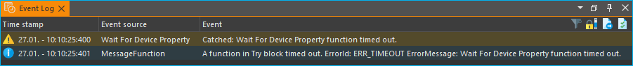Tip
If you double-click on a log entry in the Event Log, the function that caused the log entry is opened in the Script Editor and highlighted in color. This way, in the case of an error, you can quickly jump to the function that caused the error. Alternatively, you can also use the menu item in the context menu of the Event Log (right mouse button).
5.3.2. Throw Error
{kind=link}
The Throw Error function allows you to throw an error that interrupts script execution or can be caught in a Try…Catch block. If you want to detect errors in your script or create your own error from a Catch block, you can use this function.
In the configuration area of the function you can set the Error Message ❶ and the Error Identifier ❷:

Tip
In the Error Message field, you can use script variables and device properties (see picture above).
5.4. Time Functions
5.4.1. Time Functions Overview
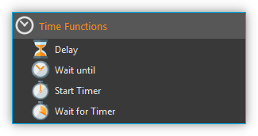
This category contains functions to enable a time-controlled program flow. The execution of scripts may be suspended for a certain amount of time or can be interrupted to wait for certain timer events.
5.4.2. Delay

The Delay function interrupts program execution for a configurable length of time. You can set the delay time (hours, minutes, seconds, or milliseconds) in the configuration area (see figure below).
All input fields support the use of variables. You can freely and flexibly assign any values to the input fields and you can freely mix variables and values with each other.
Sample Configuration
If you e.g. would like to set a delay of 10 minutes and 15 seconds, you can do so by very different assignments of the input fields:
Hours |
Minutes |
Seconds |
Milliseconds |
|---|---|---|---|
0 |
10 |
15 |
0 |
0 |
0 |
615 |
0 |
0 |
0 |
0 |
615000 |
0 |
10 |
0 |
15000 |
5.4.3. Wait Until

You can delay program execution until a precisely defined date and time with the Wait until function. Program execution is not resumed until the configured date and time has been reached.
Important
Please note that the Wait until function can only be correctly executed once. If the script is executed again, and the time point thus lies in the past, this function will simply be ignored. In other words, date and time of a Wait until function must be re-configured before restarting a script so that an effective delay can again be executed.
5.4.4. Start Timer

This function starts a millisecond timer which can be waited for with the Wait for Timer function (see below) or whose current millisecond value can be read with the Read Timer function. For configuration, assign a unique name for the timer Timer Name.
If this function is called with the name of a timer that has already been started, this timer is restarted with the configured time span.
Tip
If you want to measure the execution time for a particular process or sequence of functions in your script, simply start a timer before the sequence and read the milliseconds after the sequence with the Read Timer function.
5.4.5. Wait for Timer

This function interrupts the further program execution until the Timer Running Time configured in this function has elapsed for the selected timer. A timer with the configured timer name must have been started before via the function Start Timer. If the timer has already expired when this function is called, the program execution continues without interruption.
With the two above functions, Start Timer and Wait for Timer , it is very easy to execute functions at fixed intervals. For this, you can, for example, run a function or function sequence along a timer function in a Parallel Sequence.
5.4.6. Read Timer

With this function you can read out the current millisecond value of a particular timer and store it in a variable. You can then use the Show Message function to display this variable value. This allows you to measure and display the times of program sequences in your script, for example.
5.5. Device Functions
5.5.1. Introduction to Device Functions
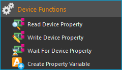The script system comes with a number of generic script functions for accessing devices (device process data, device properties). These functions are available independently of the loaded plugins. You find these generic device functions in the category Device Functions.
5.5.2. Read Device Property

This function allows you to read process data from a device and save it to a variable.
Select the device you want to access from the drop-down list Device ❷, which lists all devices that are part of the current configuration. To simplify the search for a device, you can filter the device list by selecting an appropriate filter (device type) from the Filter drop-down field ❶. After the device has been selected, use the last drop-down list Property ❸ to select the device property that you want to access.
Important
Only devices and device properties are displayed that allow read access.
In the input field Variable ❹, enter the name of the variable into which the value is to be saved during script runtime (figure below).

In abbreviated form, the set-up follows the following logic:
Read from device ❷ the value of parameter ❸ and save it into variable ❹.
Tip
When entering a name, the auto-complete feature will provide you with a selection of all previously defined variable names.
5.5.3. Write Device Property

This function is for writing process data from devices. In the input field ❶ enter the value to be written. You can also use variables or Device Property Identifiers in this field.
In the configuration panel (figure below), select the device and the appropriate device property that you want to write ❷ as described for function Read Device Property. The device selection controls ❷ only show devices and device properties, which allow write access.

The value in the input field ❶ is then written at run time in the selected device property.
5.5.4. Wait For Device Property

This function allows a script to wait for a specific device property to reach a predefined condition. Once this condition is fulfilled, the script will resume. In the configuration panel (figure below), select the device and the appropriate device property that you want to monitor ❶ as described for function Read Device Property.

In the Condition section you can configure the condition that is to
be checked against. First define an operator ❷ and then the target
value ❸ the device parameter is to be compared with. In the value
field ❸, you can also use Script Variables (e.g. $FlowRate) or
Device Properties (e.G. Nemesys_M_1.ActualFlow) to set a test condition.
To prevent the function from blocking further execution for too long, you can
set a time limit in the Timeout (ms) field. If the time limit has expired and
the test condition is not yet true, the function generates an ERR_TIMEOUT error.
To deactivate the timeout, simply set the value to 0.
In short, the function can be described as follows:
Continue script execution, if the selected property of the device ❶ meets the condition ❷ ❸.
Tip
Script Variables (such as $Value) can be used as test / comparison condition.
Tip
A timeout value of 0 deactivates the time limit.
5.5.5. Create Property Variable
{kind=link}
Use this function to create a special variable that is associated with a certain property of a certain device. Via this variable you can directly access the assigned device property from within a script, without any additional function calls.
If you e.g. want to read an analog input value using normal variables, you first need to create a variable via Create Variable function and then use the Read Device Property function to store the analog input value into this variable. Only then you can use this variable for further calculations and tests in script functions. Whenever you need a new analog input value, you must call the Read Device Property function again.
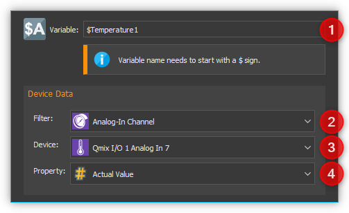
With property variables that access to device properties (e.g. analog input value) is considerably simplified. If you create a property variable, you use the configuration panel to connect a device property permanently with a variable. Whenever you read the value of this variable from within a script function, automatically the current value of the connected device property is read.
You can set the name of the variable in the input box Variable ❶ (figure above). Select the device you want to access from the drop-down list Device ❸, which lists all devices that are part of the current configuration. To simplify the search for a device, you can filter the device list by selecting an appropriate filter (device type) from the Filter drop-down field ❷.
After the device has been selected, use the last drop-down list Property ❹ to select the device property, the process data value that you want to access.
In summary, this function can be described as follows:
“Assign the device property ❹ of the device ❸ to the variable ❶ and return the device property value if a read access on the variable takes place.”
Important
Property variables can not be used to store values during calculations— use normal variables for calculations and value storage.
5.6. Logging
The Logging category contains script functions for controlling various log functions and accessing the event log.

5.6.1. Log Message
{kind=link}
With this function you can output a message in the Event Log of the application. In the configuration area of the function you can configure the following:
Enter your message text in the Message field.
Select the type of message you want to display in the Message Type group. Depending on the message type, the relevant icon appears in the event log and the message is highlighted with a type-specific color.
You can use Device Properties and
Script Variables in the text. These serve as
placeholders and are replaced by the content of the variables or the process
data of a device at runtime of the script. As soon as you enter a dollar sign
$ in the text, a list of available variables is displayed from which you
can select a variable.
In the figure above, the script variable $TargetVolume and the device
property $$Nemesys_S_1.DosedVolume have been inserted. When executed,
the message is output in the event log of the application:

Tip
Device properties can be conveniently inserted via the context menu of the Message field (right-click with the mouse).
If you select the message type Debug / Trace, the message is only output when the debug mode is active. This way you can activate additional log output for debugging your scripts that do not appear when the script is executed normally.
5.6.2. Clear Event Log
{kind=link}
This script function deletes all entries from the event log window of the application.
5.6.3. Export Event Log

The export function exports the contents of the Event Log window to a text file. Click on the folder icon in the configuration area (see figure below) to select a file name and location. We recommend that you keep the location in the Log folder of the current project.

The function saves the exported file with a timestamp, e.g.
EventLog_20220121_161653.txt.
5.7. Data Storage
This category contains functions for reading data from files and for storing data persistently.

5.7.1. Open Settings File
{kind=link}
This function opens a settings file *.ini for reading / writing data persistently.
An *.ini file is a structured data file that consists of sections and keys.
The name of a section in the *.ini file is always entered inside square brackets.
The name of a key is always on a separate line and the content is assigned by the
= char. The following example shows a typical *.ini file:
[SyringeConfig]
Length=60
Volume=1000
Caption=CustomGlass
[Variables]
Flow=100
Caption=Water
The file has two sections (SyringeConfig and Variables) and each
section contains a number of key-value pairs.
To open a settings file or to create a new one, you need to provide a filename ❶ and a script variable ❷ to store the created settings file object.
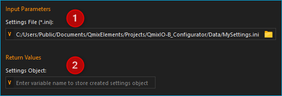In the input field for the file name ❶, you have various options for entering a file name:
- Selection via file dialog:
Click on the file folder icon ❶ and select the target directory as well as the file name and file type.
- Enter an absolute file path:
Enter an absolute file path, e.g.
C:tempMySettings.ini, using the keyboard.- Entering a relative file path
Enter a relative file path, e.g.
.DataMySettings.iniusing the keyboard. In this case, theMySettings.inifile is saved in the current project directory in the Data subfolder. If the current project for example folder isC:/Users/Public/Documents/QmixElements/Projects/Nemesys, then the following file would be created:C:/Users/Public/Documents/QmixElements/Projects/Nemesys/Data/MySettings.ini- Using a script variable
You can save an absolute or relative file path in a script variable and then use this variable in the input field.
If the file exists, it will be opened. If it does not exist yet, it will be created. You can now use the variable in the Read Setting and Write Setting functions to provide a valid and properly initialized settings object.
5.7.2. Read Setting

This function reads a single value from settings file. If the setting doesn’t exist, the function returns the given optional Default Value. If the settings doesn’t exist and no default value is given, the function raises and error.
If you would like to read the syringe length from the following settings file:
1[SyringeConfig]
2Length=60
3Volume=1000
4Caption=CustomGlass
then you would use the following parameters:

In the Settings Object Variable ❶ you provide a variable with a valid
settings object created with Open Settings File function. Then you need
to provide the Settings Group SyingeConfig ❷ and the
Key Length ❸. The function now reads the value 60 from
the file and stores it into the given script variable $SyringeLength.
5.7.3. Write Setting
{kind=link}
This function writes a single value into a settings file. If the key given in Key field already exists, the previous value is overwritten. To use this function, you need to open or create a settings file before using the function Open Settings File.
In the following example, the syringe volume 1000 shall be stored into the settings file:
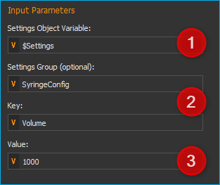In the Settings Object Variable ❶ you provide a variable with a valid settings object created with Open Settings File function. Then you need to provide an optional Settings Group and the Key ❷. In the Value field ❸ you provide the value or a script variable containing the value.
The provided parameters will write the syringe volume into line 3 of the settings file:
1[SyringeConfig]
2Length=60
3Volume=1000
4Caption=CustomGlass